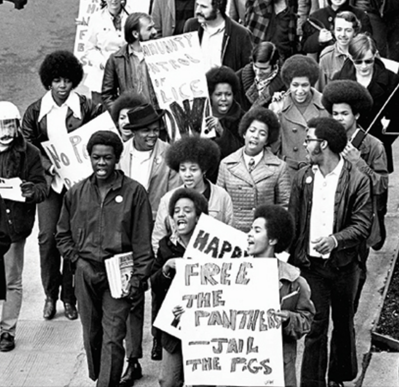

The 1960's were a turbulent decade. It was a decade of protest, riots, war, assassinations, etc. You name it, it probably happened! The Black Panthers were considered by many as a "militant" group. They were very involved in the Civil Rights Movement.

Example of Music: The Beatles
Music in the 1960's was more young-people oriented. It was heavily influenced by the Blues and Rhythm & Blues. One big band that broke out in the 60's was The Beatles. The Beatles were the leaders of the British Invasion that forever changed the sound of pop music.